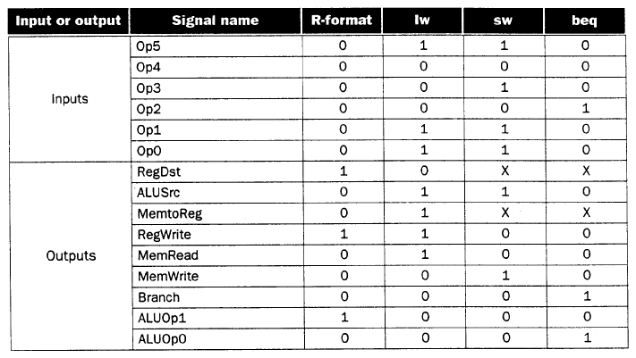

Figure 4.3. Schematic diagram of MIPS architecture from an implementational perspective, adapted from [Maf01].
Reading Assignments and Exercises
Recall that, in Section 3, we designed an ALU based on (a) building blocks such as multiplexers for selecting an operation to produce ALU output, (b) carry lookahead adders to reduce the complexity and (in practice) the critical pathlength of arithmetic operations, and (c) components such as coprocessors to perform costly operations such as floating point arithmetic. We also showed that computer arithmetic suffers from errors due to fintie precision, lack of associativity, and limitations of protocols such as the IEEE 754 floating point standard.
In previous sections, we discussed computer organization at the microarchitectural level, processor organization (in terms of datapath, control, and register file), as well as logic circuits including clocking methodologies and sequential circuits such as latches.
In Figure 4.1, the typical organization of a modern von Neumann processor is illustrated. Note that the CPU, memory subsystem, and I/O subsystem are connected by address, data, and control buses. The fact that these are parallel buses is denoted by the slash through each line that signifies a bus.
Figure 4.1. Schematic diagram of a modern von Neumann processor,
where the CPU is denoted by a shaded box -adapted from [Maf01].
It is worthwhile to further discuss the following components in Figure 4.1:
Processor (CPU) is the active part of the computer, which does all the work of data manipulation and decision making.
Datapath is the hardware that performs all the required operations, for example, ALU, registers, and internal buses.
Control is the hardware that tells the datapath what to do, in terms of switching, operation selection, data movement between ALU components, etc.
The processor represented by the shaded block in Figure 4.1 is organized as shown in Figure 4.2. Observe that the ALU performs I/O on data stored in the register file, while the Control Unit sends (receives) control signals (resp. data) in conjunction with the register file.
Figure 4.2. Schematic diagram of the processor in Figure 4.1,
adapted from [Maf01].
In MIPS, the ISA determines many aspects of the processor implementation. For example, implementational strategies and goals affect clock rate and CPI. These implementational constraints cause parameters of the components in Figure 4.3 to be modified throughout the design process.
Figure 4.3. Schematic diagram of MIPS architecture from an
implementational perspective, adapted from [Maf01].
Such implementational concerns are reflected in the use of logic elements and clocking strategies. For example, with combinational elements such as adders, multiplexers, or shifters, outputs depend only on current inputs. However, sequential elements such as memory and registers contain state information, and their output thus depends on their inputs (data values and clock) as well as on the stored state. The clock determines the order of events within a gate, and defines when signals can be converted to data to be read or written to processor components (e.g., registers or memory). For purposes of review, the following diagram of clocking is presented:
Here, a signal that is held at logic high value is said to be asserted. In Section 1, we discussed how edge-triggered clocking can support a precise state transition on the active clock pulse edge (either the rising or falling edge, depending on what the designer selects). We also reviewed the SR Latch based on nor logic, and showed how this could be converted to a clocked SR latch. From this, a clocked D Latch and the D flip-flop were derived. In particular, the D flip-flop has a falling-edge trigger, and its output is initially deasserted (i.e., the logic low value is present).
The register file (RF) is a hardware device that has two read ports and one write port (corresponding to the two inputs and one output of the ALU). The RF and the ALU together comprise the two elements required to compute MIPS R-format ALU instructions. The RF is comprised of a set of registers that can be read or written by supplying a register number to be accessed, as well (in the case of write operations) as a write authorization bit. A block diagram of the RF is shown in Figure 4.4a.
(a)
(b)
(c)
Figure 4.4. Register file (a) block diagram, (b)
implementation of two read ports, and (c) implementation of write port
- adapted from [Maf01].
Since reading of a register-stored value does not change the state of the register, no "safety mechanism" is needed to prevent inadvertent overwriting of stored data, and we need only supply the register number to obtain the data stored in that register. (This data is available at the Read Data output in Figure 4.4a.) However, when writing to a register, we need (1) a register number, (2) an authorization bit, for safety (because the previous contents of the register selected for writing are overwritten by the write operation), and (3) a clock pulse that controls writing of data into the register.
In this discussion and throughout this section, we will assume that the register file is structured as shown in Figure 4.4a. We further assume that each register is constructed from a linear array of D flip-flops, where each flip-flop has a clock (C) and data (D) input. The read ports can be implemented using two multiplexers, each having log2N control lines, where N is the number of bits in each register of the RF. In Figure 4.4b, note that data from all N = 32 registers flows out to the output muxes, and the data stream from the register to be read is selected using the mux's five control lines. Similar to the ALU design presented in Section 3, parallelism is exploited for speed and simplicity.
In Figure 4.4c is shown an implementation of the RF write port. Here, the write enable signal is a clock pulse that activates the edge-triggered D flip-flops which comprise each register (shown as a rectangle with clock (C) and data (D) inputs). The register number is input to an N-to-2N decoder, and acts as the control signal to switch the data stream input into the Register Data input. The actual data switching is done by and-ing the data stream with the decoder output: only the and gate that has a unitary (one-valued) decoder output will pass the data into the selected register (because 1 and x = x).
We next discuss how to construct a datapath from a register file and an ALU, among other components.
Reading Assignments and Exercises
The datapath is the "brawn" of a processor, since it implements the fetch-decode-execute cycle. The general discipline for datapath design is to (1) determine the instruction classes and formats in the ISA, (2) design datapath components and interconnections for each instruction class or format, and (3) compose the datapath segments designed in Step 2) to yield a composite datapath.
Simple datapath components include memory (stores the current instruction), PC or program counter (stores the address of current instruction), and ALU (executes current instruction). The interconnection of these simple components to form a basic datapath is illustrated in Figure 4.5. Note that the register file is written to by the output of the ALU. As in Section 4.1, the register file shown in Figure 4.6 is clocked by the RegWrite signal.
Figure 4.5. Schematic high-level diagram of MIPS datapath from an
implementational perspective, adapted from [Maf01].
Implementation of the datapath for I- and J-format instructions requires two more components - a data memory and a sign extender, illustrated in Figure 4.6. The data memory stores ALU results and operands, including instructions, and has two enabling inputs (MemWrite and MemRead) that cannot both be active (have a logical high value) at the same time. The data memory accepts an address and either accepts data (WriteData port if MemWrite is enabled) or outputs data (ReadData port if MemRead is enabled), at the indicated address. The sign extender adds 16 leading digits to a 16-bit word with most significant bit b, to product a 32-bit word. In particular, the additional 16 digits have the same value as b, thus implementing sign extension in twos complement representation.
Figure 4.6. Schematic diagram of Data Memory and Sign Extender,
adapted from [Maf01].
Implementation of the datapath for R-format instructions is fairly straightforward - the register file and the ALU are all that is required. The ALU accepts its input from the DataRead ports of the register file, and the register file is written to by the ALUresult output of the ALU, in combination with the RegWrite signal.
Figure 4.7. Schematic diagram R-format instruction datapath,
adapted from [Maf01].
The load/store datapath uses instructions such as
lw $t1, offset($t2), where offset denotes a
memory address offset applied to the base address in register
$t2. The lw instruction reads from memory
and writes into register $t1. The sw
instruction reads from register $t1 and writes into
memory. In order to compute the memory address, the MIPS ISA
specification says that we have to sign-extend the 16-bit offset to a
32-bit signed value. This is done using the sign extender shown in
Figure 4.6.
The load/store datapath is illustrated in Figure 4.8, and performs the following actions in the order given:
Register Access takes input from the register file, to implement the instruction, data, or address fetch step of the fetch-decode-execute cycle.
Memory Address Calculation decodes the base address and offset, combining them to produce the actual memory address. This step uses the sign extender and ALU.
Read/Write from Memory takes data or instructions from the data memory, and implements the first part of the execute step of the fetch/decode/execute cycle.
Write into Register File puts data or instructions into the data memory, implementing the second part of the execute step of the fetch/decode/execute cycle.
Figure 4.8. Schematic diagram of the Load/Store instruction
datapath. Note that the execute step also includes writing of
data back to the register file, which is not shown in the figure, for
simplicity [MK98].
The load/store datapath takes operand #1 (the base address) from the register file, and sign-extends the offset, which is obtained from the instruction input to the register file. The sign-extended offset and the base address are combined by the ALU to yield the memory address, which is input to the Address port of the data memory. The MemRead signal is then activated, and the output data obtained from the ReadData port of the data memory is then written back to the Register File using its WriteData port, with RegWrite asserted.
The branch datapath (jump is an unconditional branch)
uses instructions such as beq $t1, $t2, offset,
where offset is a 16-bit offset for computing the branch
target address via PC-relative addressing. The beq
instruction reads from registers $t1 and
$t2, then compares the data obtained from these registers
to see if they are equal. If equal, the branch is taken. Otherwise,
the branch is not taken.
By taking the branch, the ISA specification means that the ALU adds a sign-extended offset to the program counter (PC). The offset is shifted left 2 bits to allow for word alignment (since 22 = 4, and words are comprised of 4 bytes). Thus, to jump to the target address, the lower 26 bits of the PC are replaced with the lower 26 bits of the instruction shifted left 2 bits.
The branch instruction datapath is illustrated in Figure 4.9, and performs the following actions in the order given:
Register Access takes input from the register file, to implement the instruction fetch or data fetch step of the fetch-decode-execute cycle.
Calculate Branch Target - Concurrent with ALU #1's evaluation of the branch condition, ALU #2 calculates the branch target address, to be ready for the branch if it is taken. This completes the decode step of the fetch-decode-execute cycle.
Evaluate Branch Condition and Jump to BTA or PC+4 uses ALU #1 in Figure 4.9, to determine whether or not the branch should be taken. Jump to BTA or PC+4 uses control logic hardware to transfer control to the instruction referenced by the branch target address. This effectively changes the PC to the branch target address, and completes the execute step of the fetch-decode-execute cycle.
Figure 4.9. Schematic diagram of the Branch instruction
datapath. Note that, unlike the Load/Store datapath, the
execute step does not include writing of results back to the
register file [MK98].
The branch datapath takes operand #1 (the offset) from the instruction input to the register file, then sign-extends the offset. The sign-extended offset and the program counter (incremented by 4 bytes to reference the next instruction after the branch instruction) are combined by ALU #1 to yield the branch target address. The operands for the branch condition to evaluate are concurrently obtained from the register file via the ReadData ports, and are input to ALU #2, which outputs a one or zero value to the branch control logic.
MIPS has the special feature of a delayed branch, that is, instruction Ib which follows the branch is always fetched, decoded, and prepared for execution. If the branch condition is false, a normal branch occurs. If the branch condition is true, then Ib is executed. One wonders why this extra work is performed - the answer is that delayed branch improves the efficiency of pipeline execution, as we shall see in Section 5. Also, the use of branch-not-taken (where Ib is executed) is sometimes the common case.
Reading Assignments and Exercises
A single-cycle datapath executes in one cycle all instructions that the datapath is designed to implement. This clearly impacts CPI in a beneficial way, namely, CPI = 1 cycle for all instructions. In this section, we first examine the design discipline for implementing such a datapath using the hardware components and instruction-specific datapaths developed in Section 4.2. Then, we discover how the performance of a single-cycle datapath can be improved using a multi-cycle implementation.
Let us begin by constructing a datapath with control structures taken from the results of Section 4.2. The simplest way to connect the datapath components developed in Section 4.2 is to have them all execute an instruction concurrently, in one cycle. As a result, no datapath component can be used more than once per cycle, which implies duplication of components. To make this type of design more efficient without sacrificing speed, we can share a datapath component by allowing the component to have multiple inputs and outputs selected by a multiplexer.
The key to efficient single-cycle datapath design is to find commonalities among instruction types. For example, the R-format MIPS instruction datapath of Figure 4.7 and the load/store datapath of Figure 4.8 have similar register file and ALU connections. However, the following differences can also be observed:
The second ALU input is a register (R-format instruction) or a signed-extended lower 16 bits of the instruction (e.g., a load/store offset).
The value written to the register file is obtained from the ALU (R-format instruction) or memory (load/store instruction).
These two datapath designs can be combined to include separate instruction and data memory, as shown in Figure 4.10. The combination requires an adder and an ALU to respectively increment the PC and execute the R-format instruction.
Figure 4.10. Schematic diagram of a composite datapath for
R-format and load/store instructions [MK98].
Adding the branch datapath to the datapath illustrated in Figure 4.9 produces the augmented datapath shown in Figure 4.11. The branch instruction uses the main ALU to compare its operands and the adder computes the branch target address. Another multiplexer is required to select either the next instruction address (PC + 4) or the branch target address to be the new value for the PC.
Figure 4.11. Schematic diagram of a composite datapath for
R-format, load/store, and branch instructions [MK98].
4.3.1.1. ALU Control. Given the simple datapath shown in Figure 4.11, we next add the control unit. Control accepts inputs (called control signals) and generates (a) a write signal for each state element, (b) the control signals for each multiplexer, and (c) the ALU control signal. The ALU has three control signals, as shown in Table 4.1, below.
Table 4.1. ALU control codes
ALU Control Input Function
------------------ ------------
000 and
001 or
010 add
110 sub
111 slt
The ALU is used for all instruction classes, and
always performs one of the five functions in the right-hand
column of Table 4.1. For branch instructions, the ALU performs a
subtraction, whereas R-format instructions require one of the ALU
functions. The ALU is controlled by two inputs: (1) the opcode from a
MIPS instruction (six most significant bits), and (2) a two-bit
control field (which Patterson and Hennesey call ALUop).
The ALUop signal denotes whether the operation should be one of the
following:
ALUop Input Operation
------------- -------------
00 load/store
01 beq
10 determined by opcode
The output of the ALU control is one of the 3-bit control codes shown in the left-hand column of Table 4.1. In Table 4.2, we show how to set the ALU output based on the instruction opcode and the ALUop signals. Later, we will develop a circuit for generating the ALUop bits. We call this approach multi-level decoding -- main control generates ALUop bits, which are input to ALU control. The ALU control then generates the three-bit codes shown in Table 4.1.
The advantage of a hierarchically partitioned or pipelined control scheme is realized in reduced hardware (several small control units are used instead of one large unit). This results in reduced hardware cost, and can in certain instances produce increased speed of control. Since the control unit is critical to datapath performance, this is an important implementational step.
Recall that we need to map the two-bit ALUop field and the six-bit opcode to a three-bit ALU control code. Normally, this would require 2(2 + 6) = 256 possible combinations, eventually expressed as entries in a truth table. However, only a few opcodes are to be implemented in the ALU designed herein. Also, the ALU is used only when ALUop = 102. Thus, we can use simple logic to implement the ALU control, as shown in terms of the truth table illustrated in Table 4.2.
Table 4.2. ALU control bits as a function of
ALUop bits and opcode bits [MK98].
In this table, an "X" in the input column represents a "don't-care" value, which indicates that the output does not depend on the input at the i-th bit position. The preceding truth table can be optimized and implemented in terms of gates, as shown in Section C.2 of Appendix C of the textbook.
4.3.1.2. Main Control Unit. The first step in designing the main control unit is to identify the fields of each instruction and the required control lines to implement the datapath shown in Figure 4.11.
Recalling the three MIPS instruction formats (R, I, and J), shown as follows:

Observe that the following always apply:
Bits 31-26: opcode - always at this location
Bits 25-21 and 20-16: input register indices - always at this location
Additionally, we have the following instruction-specific codes due to the regularity of the MIPS instruction format:
Bits 25-21: base register for load/store instruction - always at this location
Bits 15-0: 16-bit offset for branch instruction - always at this location
Bits 15-11: destination register for R-format instruction - always at this location
Bits 20-16: destination register for load/store instruction - always at this location
Note that the different positions for the two destination registers implies a selector (i.e., a mux) to locate the appropriate field for each type of instruction. Given these contraints, we can add to the simple datapath thus far developed instruction labels and an extra multiplexer for the WriteReg input of the register file, as shown in Figure 4.12.
Figure 4.12. Schematic diagram of composite datapath for
R-format, load/store, and branch instructions (from Figure 4.11) with
control signals and extra multiplexer for WriteReg signal generation [MK98].
Here, we see the seven-bit control lines (six-bit opcode with one-bit WriteReg signal) together with the two-bit ALUop control signal, whose actions when asserted or deasserted are given as follows:
Deasserted: Register destination number for the Write register is taken from bits 20-16 (rt field) of the instruction
Asserted: Register destination number for the Write register is taken from bits 15-11 (rd field) of the instruction
Deasserted: No action
Asserted: Register on the WriteRegister input is written with the value on the WriteData input
Deasserted: The second ALU operand is taken from the second register file output (ReadData 2)
Asserted: the second alu operand is the sign-extended, lower 16 bits of the instruction
Deasserted: PC is overwritten by the output of the adder (PC + 4)
Asserted: PC overwritten by the branch target address
Deasserted: No action
Asserted: Data memory contents designated by address input are present at the ReadData output
Deasserted: No action
Asserted: Data memory contents designated by address input are present at the WriteData input
Deasserted: The value present at the WriteData input is output from the ALU
Asserted: The value present at the register WriteData input is taken from data memory
Given only the opcode, the control unit can thus set
all the control signals except PCSrc, which is only set if the
instruction is beq and the Zero output of the ALu used
for comparison is true. PCSrc is generated by and-ing a
Branch signal from the control unit with the Zero signal from
the ALU. Thus, all control signals can be set based on the opcode
bits. The resultant datapath and its signals are shown in detail in
Figure 4.13.
Figure 4.13. Schematic diagram of composite datapath for
R-format, load/store, and branch instructions (from Figure 4.12) with
control signals illustrated in detail [MK98].
We next examine functionality of the datapath illustrated in 4.13, for the three major types of instructions, then discuss how to augment the datapath for a new type of instruction.
Recall that there are three MIPS instruction formats -- R, I, and J. Each instruction causes slightly different functionality to occur along the datapath, as follows.
4.3.2.1. R-format Instruction. Execution of an
R-format instruction (e.g., add $t1, $t0, $t1) using the
datapath developed in Section 4.3.1 involves the following steps:
Fetch instruction from instruction memory and increment PC
Input registers (e.g., $t0 and
$t1) are read from the register file
ALU operates on data from register file using the funct field of the MIPS instruction (Bits 5-0) to help select the ALU operation
Result from ALU written into register file
using bits 15-11 of instruction to select the destination
register (e.g., $t1).
Note that this implementational sequence is actually combinational, becuase of the single-cycle assumption. Since the datapath operates within one clock cycle, the signals stabilize approximately in the order shown in Steps 1-4, above.
4.3.2.2. Load/Store Instruction. Execution of
a load/store instruction (e.g., lw $t1, offset($t2))
using the datapath developed in Section 4.3.1 involves the following
steps:
Fetch instruction from instruction memory and increment PC
Read register value (e.g., base address
in $t2) from the register file
ALU adds the base address from register
$t2 to the sign-extended lower 16 bits of the
instruction (i.e., offset)
Result from ALU is applied as an address to the data memory
Data retrieved from the memory unit is
written into the register file, where the register index
is given by $t1 (Bits 20-16 of the instruction).
4.3.2.3. Branch Instruction. Execution of
a branch instruction (e.g., beq $t1, $t2, offset)
using the datapath developed in Section 4.3.1 involves the following
steps:
Fetch instruction from instruction memory and increment PC
Read registers (e.g., $t1 and
$t2) from the register file. The adder sums PC
+ 4 plus sign-extended lower 16 bits of offset
shifted left by two bits, thereby producing the branch
target address (BTA).
ALU subtracts contents of $t1
minus contents of $t2. The Zero output of the
ALU directs which result (PC+4 or BTA) to write as the new
PC.
4.3.2.4. Final Control Design. Now that we have determined the actions that the datapath must perform to compute the three types of MIPS instructions, we can use the information in Table 4.3 to describe the control logic in terms of a truth table. This truth table (Table 4.3) is optimized as shown in Section C.2 of Appendix C of the textbook to yield the datapath control circuitry.
Table 4.3. ALU control bits as a function of
ALUop bits and opcode bits [MK98].

The jump instruction provides a useful example of how to extend the single-cycle datapath developed in Section 4.3.2, to support new instructions. Jump resembles branch (a conditional form of the jump instruction), but computes the PC differently and is unconditional. Identical to the branch target address, the lowest two bits of the jump target address (JTA) are always zero, to preserve word alignment. The next 26 bits are taken from a 26-bit immediate field in the jump instruction (the remaining six bits are reserved for the opcode). The upper four bits of the JTA are taken from the upper four bits of the next instruction (PC + 4). Thus, the JTA computed by the jump instruction is formatted as follows:
The jump is implemented in hardware by adding a control circuit to Figure 4.13, which is comprised of:
An additional multiplexer, to select the source for the new PC value. To cover all cases, this source is PC+4, the conditional BTA, or the JTA.
An additional control signal for the new multiplexer, asserted only for a jump instruction (opcode = 2).
The resulting augmented datapath is shown in Figure 4.14.
Figure 4.14. Schematic diagram of composite datapath for
R-format, load/store, branch, and jump instructions, with control
signals labelled [MK98].
The single-cycle datapath is not used in modern processors, because it is inefficient. The critical path (longest propagation sequence through the datapath) is five components for the load instruction. The cycle time tc is limited by the settling time ts of these components. For a circuit with no feedback loops, tc > 5ts. In practice, tc = 5kts, with large proportionality constant k, due to feedback loops, delayed settling due to circuit noise, etc. Additionally, as shown in the table on p. 374 of the textbook, it is possible to compute the required execution time for each instruction class from the critical path information. The result is that the Load instruction takes 5 units of time, while the Store and R-format instructions take 4 units of time. All the other types of instructions that the datapath is designed to execute run faster, requiring three units of time.
The problem of penalizing addition, subtraction, and comparison operations to accomodate loads and stores leads one to ask if multiple cycles of a much faster clock could be used for each part of the fetch-decode-execute cycle. In practice, this technique is employed in CPU design and implementation, as discussed in the following sections on multicycle datapath design. In Section 5, we will show that datapath actions can be interleaved in time to yield a potentially fast implementation of the fetch-decode-execute cycle that is formalized in a technique called pipelining.
In Sections 4.3.1 through 4.3.4, we designed a single-cycle datapath by (1) grouping instructions into classes, (2) decomposing each instruction class into constituent operations, and (3) deriving datapath components for each instruction class that implemented these operations. In this section, we use the single-cycle datapath components to create a multi-cycle datapath, where each step in the fetch-decode-execute sequence takes one cycle. This approach has two advantages over the single-cycle datapath:
Each functional unit (e.g., Register File, Data Memory, ALU) can be used more than once in the course of executing an instruction, which saves hardware (and, thus, reduces cost); and
Each instruction step takes one cycle, so different instructions have different execution times. In contrast, the single-cycle datapath that we designed previously required every instruction to take one cycle, so all the instructions move at the speed of the slowest.
We next consider the basic differences between single-cycle and multi-cycle datapaths.
4.3.5.1. Cursory Analysis. Figure 4.15 illustrates a simple multicycle datapath. Observe the following differences between a single-cycle and multi-cycle datapath:
In the multicycle datapath, one memory unit stores both instructions and data, whereas the single-cycle datapath requires separate instruction and data memories.
The multicycle datapath uses on ALU, versus an ALU and two adders in the single-cycle datapath, because signals can be rerouted throuh the ALU in a multicycle implementation.
In the single-cycle implementation, the instruction executes in one cycle (by design) and the outputs of all functional units must stabilize within one cycle. In contrast, the multicycle implementation uses one or more registers to temporarily store (buffer) the ALU or functional unit outputs. This buffering action stores a value in a temporary register until it is needed or used in a subsequent clock cycle.
Figure 4.15. Simple multicycle datapath with buffering
registers (Instruction register, Memory data register, A, B, and
ALUout) [MK98].
Note that there are two types of state elements (e.g., memory, registers), which are:
Programmer-Visible (register file, PC, or memory), in which data is stored that is used by subsequent instructions (in a later clock cycle); and
Additional State Elements(buffer registers), in which data is stored that is used in a later clock cycle of the same instruction.
Thus, the additional (buffer) registers determine (a) what functional units will fit into a given clock cycle and (b) the data required for later cycles involved in executing the current instruction. In the simple implementation presented herein, we assume for purposes of illustration that each clock cycle can accomodate one and only one of the following operations:
4.3.5.2. New Registers. As a result of buffering, data produced by memory, register file, or ALU is saved for use in a subsequent cycle. The following temporary registers are important to the multicycle datapath implementation discussed in this section:
The IR and MDR are distinct registers because some operations require both instruction and data in the same clock cycle. Since all registers except the IR hold data only between two adjacent clock cycles, these registers do not need a write control signal. In contrast, the IR holds an instruction until it is executed (multiple clock cycles) and therefor requires a write control signal to protect the instruction from being overwritten before its execution has been completed.
4.3.5.3. New Muxes. we also need to add new multiplexers and expand existing ones, to implement sharing of functional units. For example, we need to select between memory address as PC (for a load instruction) or ALUout (for load/store instructions). The muxes also route to one ALU the many inputs and outputs that were distributed among the several ALUs of the single-cycle datapath. Thus, we make the following additional changes to the single-cycle datapath:
Add a multiplexer to the first ALU input, to choose between (a) the A register as input (for R- and I-format instructions) , or (b) the PC as input (for branch instructions).
On the second ALU, the input is selected by a four-way mux (two control bits). The two additional inputs to the mux are (a) the immediate (constant) value 4 for incrementing the PC and (b) the sign-extended offset, shifted two bits to preserve alighment, which is used in computing the branch target address.
The details of these muxes are shown in Figure 4.16. By adding a few registers (buffers) and muxes (inexpensive widgets), we halve the number of memory units (expensive hardware) and eliminate two adders (more expensive hardware).
4.3.5.4. New Control Signals. The datapath shown in Figure 4.16 is multicycle, since it uses multiple cycles per instruction. As a result, it will require different control signals than the single-cycle datapath, as follows:
It is advantageous that the ALU control from the single-cycle datapath can be used as-is for the multicycle datapath ALU control. However, some modifications are required to support branches and jumps. We describe these changes as follows.
4.3.5.5. Branch and Jump Instruction Support. To implement branch and jump instructions, one of three possible values is written to the PC:
ALU output = PC + 4, to get the next instruction during the instruction fetch step (to do this, PC + 4 is written directly to the PC)
Register ALUout, which stores the computed branch target address.
Lower 26 bits (offset) of the IR, shifted left by two bits (to preserve alginment) and concatenated with the upper four bits of PC+4, to form the jump target address.
The PC is written unconditionally (jump instruction) or conditionally (branch), which implies two control signals - PCWrite and PCWriteCond. From these two signals and the Zero output of the ALU, we derive the PCWrite control signal, via the following logic equation:
PCWriteControl = (ALUZero and PCWriteCond) or PCWrite,
where (a) ALUZero indicates if two operands of the
beq nstruction are equal and (b) the result of (ALUZero
and PCWriteCond) determines whether the PC should be written
during a conditional branch. We call the latter the branch
taken condition. Figure 4.16 shows the resultant multicycle
datapath and control unit with new muxes and corresponding control
signals. Table 4.4 illustrates the control signals and their
functions.
Given the datapath illustrated in Figure 4.16, we examine instruction execution in each cycle of the datapath. The implementational goal is balancing of the work performed per clock cycle, to minimize the average time per cycle across all instructions. For example, each step would contain one of the following:
Thus, the cycle time will be equal to the maximum time required for any of the preceding operations.
Note: Since (a) the datapath is designed to be edge-triggered (reference Section 4.1.1) and (b) the outputs of ALU, register file, or memory are stored in dedicated registers (buffers), we can continue to read the value stored in a dedicated register. The new value, output from ALU, register file, or memory, is not available in the register until the next clock cycle.
Figure 4.16. MIPS multicycle datapath [MK98].
Table 4.4. Multicycle datapath control signals and their functions [MK98].
In the multicycle datapath, all operations within a clock cycle occur in parallel, but successive steps within a given instruction operate sequentially. Several implementational issues present that do not confound this view, but should be discussed. One must distinguish between (a) reading/writing the PC or one of the buffer registers, and (b) reads/writes to the register file. Namely, I/O to the PC or buffers is part of one clock cycle, i.e., we get this essentially "for free" because of the clocking scheme and hardware design. In contrast, the register file has more complex hardware (as shown in Section 4.1.2) and requires a dedicated clock cycle for its circuitry to stabilize.
We next examine multicycle datapath execution in terms of the fetch-decode-execute sequence.
4.3.6.1. Instruction Fetch. In this first cycle that is common to all instructions, the datapath fetches an instruction from memory and computes the new PC (address of next instruction in the program sequence), as represented by the following pseudocode:
IR = Memory[PC] # Put contents of Memory[PC] in Instr.Register
PC = PC + 4 # Increment the PC by 4 to preserve alignment
where IR denotes the instruction register.
The PC is sent (via control circuitry) as an address
to memory. The memory hardware performs a read operation and control
hardware transfers the instruction at Memory[PC] into the IR, where it
is stored until the next instruction is fetched. Then, the ALU
increments the PC by four to preserve word alighment. The incremented
(new) PC value is stored back into the PC register by setting PCSource
= 00 and asserting PCWrite. Fortunately, incrementing the PC and
performing the memory read are concurrent operations, since the new PC
is not required (at the earliest) until the next clock cycle.
Reading Assigment: The exact
sequence of operations is described on p.385 of the textbook.
4.3.6.2. Instruction Decode and Data Fetch. Included in the multicycle datapath design is the assumption that the actual opcode to be executed is not known prior to the instruction decode step. This is reasonable, since the new instruction is not yet available until completion of instruction fetch and has thus not been decoded.
As a result of not knowing what operation the ALU is to perform in the current instruction, the datapath must execute only actions that are:
Therefore, given the rs and rt fields of the MIPS instruction format (per Figure 2.7), we can suppose (harmlessly) that the next instruction will be R-format. We can thus read the operands corresponding to rs and rt from the register file. If we don't need one or both of these operands, that is not harmful. Otherwise, the register file read operation will place them in buffer registers A and B, which is also not harmful.
Another action the datapath can perform is computation of the branch target address using the ALU, since this is the instruction decode step and the ALU is not yet needed for instruction execution. If the instruction that we are decoding in this step is not a branch, then no harm is done - the BTA is stored in ALUout and nothing further happens to it.
We can perform these preparatory actions because of
the where "x << n" denotes x shifted left by n bits.
Reading Assigment: The exact
sequence of low-level operations is described on p.384 of the textbook. 4.3.6.3. Instruction Execute, Address Computation,
or Branch Completion. In this cycle, we know what the instruction
is, since decoding was completed in the previous cycle. The
instruction opcode determines the datapath operation, as in the
single-cycle datapath. The ALU operates upon the operands prepared in
the decode/data-fetch step (Section 4.3.6.2), performing one of the
following actions:
Memory Reference: The ALU constructs the memory address from the base address (stored
in A) and the offset (taken from the low 16 bits of the IR). Control
signals are set as described on p. 387 opf the textbook.
R-format Instruction: The ALU takes its inputs from buffer registers A and B and computes
a result according to control signals specified by the instruction
opcode, function field, and control signals Branch: In branch instructions, the ALU performs the comparison between the
contents of registers A and B. If A = B, then the Zero output of the
ALU is asserted, the PC is updated (overwritten) with (1) the BTA
computed in the preceding step (per Section 4.3.6.2), then (2) the
ALUout value. If the branch is not taken, then the PC+4 value
computed during instruction fetch (per Section 4.3.6.1) is used. This
covers all possibilities by using for the BTA the value most recently
written into the PC. Salient hardware control actions are discussed
on p. 387 of the textbook.
Jump: Here, the PC is replaced by the jump target address,
which does not need the ALU be computed, but can be formed in hardware
as described on p. 387 of the textbook.
4.3.6.4. Memory Access or R-format Instruction
Completion. In this cycle, a load-store instruction accesses
memory and an R-format instruction writes its result (which appears at
ALUout at the end of the previous cycle), as follows:
where MDR denotes the memory data register.
Reading Assigment: The
control actions for load/store instructions are discussed on p.388 of
the textbook. For an R-format completion, where
the data to be loaded was stored in the MDR in the
previous cycle and is thus available for this cycle. The rt
field of the MIPS instruction format (Bits 20-16) has the register
number, which is applied to the input of the register file, together
with RegDst = 0 and an asserted RegWrite signal.
Reading Assigment: The exact
sequence of operations is described on p.385 of the textbook. From the preceding sequences as well as their
discussion in the textbook, we are prepared to design a finite-state
controller, as shown in the following section.
Reading Assignments and Exercises
In the single-cycle datapath control, we designed
control hardware using a set of truth tables based on control signals
activated for each instruction class. However, this approach must be
modified for the multicycle datapath, which has the additional
dimension of time due to the stepwise execution of instructions.
Thus, the multicycle datapath control is dependent on the current step
involved in executing an instruction, as well as the next step.
There are two alternative techniques for implementing
multicycle datapath control. First, a finite-state machine (FSM)
or finite state control (FSC) predicts actions appropriate for
datapath's next computational step. This prediction is based on (a)
the status and control information specific to the datapath's current
step and (b) actions to be performed in the next step. A second
technique, called microprogramming, uses a programmatic representation
to implement control, as discussed in Section 4.5. Appendix C of the textbook shows
how these representations are translated into hardware.
An FSM consists of a set of states with directions
that tell the FSM how to change states. The following features are
important:
Current state and inputs;
Next-state function, also called the
transition function, which converts inputs to
(a) a new state, and (b) outputs of the FSM; and
Outputs, which in the case of the
multicycle datapath, are control signals that are
asserted when the FSM is in a given state.
Implementationally, we assume that all
outputs not explicitly asserted are deasserted. Additionally, all
multiplexer controls are explicitly specified if and only if they
pertain to the current and next states. A simple example of an FSM
is given in Appendix B of the textbook.
The FSC is designed for the multicycle datapath
by considering the five steps of instruction execution given in
Section 4.3, namely:
Each of these steps takes one cycle, by definition of
the multicycle datapath. Also, each step stores its results in temporary
(buffer) registers such as the IR, MDR, A, B, and ALUout. Each state in
the FSM will thus (a) occupy one cycle in time, and (b) store its results
in a temporary (buffer) register.
From the discussion of Section 4.3, observe that
Steps 1 and 2 are indentical for every instruction, but Steps 3-5
differ, depending on instruction format. Also note that oafter
completion of an instruction, the FSC returns to its initial state
(Step 1) to fetch another instruction, as shown in Figure 4.17.
Let us begin our discussion of the FSC by expanding
steps 1 and 2, where State 0 (the initial state) corresponds to Step 1.
4.4.2.1. Instruction Fetch and Decode. In
Figure 4.18 is shown the FSM representation for instruction fetch and
decode. The control signals asserted in each state are shown within
the circle that denotes a given state. The edges (lines or arrows)
between states are labelled with the conditions that must be fulfilled
for the illustrated transition between states to occur. Patterson and
Hennessey call the process of branching to different states
decoding, which depends on the instruction class after State 1
(i.e., Step 2, as listed above).
4.4.2.2. Memory Reference. The memory
reference portion of the FSC is shown in Figure 4.19. Here, State 2
computes the memory address by setting ALU input muxes to pass the A
register (base address) and sign-extended lower 16 bits of the offset
(shifted left two bits) to the ALU. After address computation, memory
read/write requires two states:
State 3: Performs memory access by
asserting the MemRead signal, putting memory output into the MDR.
State 5: Activated if In both states, the memory is forced to equal ALUout,
by setting the control signal IorD = 1.
When State 5 completes, control is transferred to
State 0. Otherwise, State 3 completes and the datapath must finish
the load operation, which is accomplished by transferring control to
State 4. There, MemtoReg = 1, RegDst = 0, and the MDR contents are
written to the register file. The next state is State 0.
4.4.2.3. R-format Execution. To implement
R-format instructions, FSC uses two states, one for execution (Step 3)
and another for R-format completion (Step 4), per Figure 4.20. State
6 asserts ALUSrcA and sets ALUSrcB = 00, which loads the ALU's A and
B input registers from register file outputs. The ALUop = 10 setting
causes the ALU control to use the instruction's funct field to
set the ALU control signals to implement the designated ALU operation.
State 7 causes (a) the register file to write (assert
RegWrite), (b) rd field of the instruction to have the number
of the destination register (assert RegDst), and (c) ALUout selected as
having the value that must be written back to the register file as
the result of the ALU operation (by deasserting MemtoReg).
4.4.2.4. Branch Control. Since branches
complete during Step 3, only one new state is needed. In State 8,
(a) control signas that cause the ALU to compare the contents of its A
and B input registers are set (i.e., ALUSrcA = 1, ALUSrcB = 00, ALUop
= 01), and (b) the PC is written conditionally (by setting PCSrc = 01
and asserting PCWriteCond). Note that setting ALUop = 01 forces a
subtraction, hence only the
4.4.2.5. Jump Instruction. Similar to branch,
the jump instruction requires only one state (#9) to complete
execution. Here, the PC is written by asserting PCWrite. The value
written to the PC is the lower 26 bits of the IR with the upper four
bits of PC, and the lower two bits equal to 002. This is done
by setting PCSrc = 102.
The composite FSC is shown in Figure 4.22, which was
constructed by composing Figures 4.18 through 4.21.
When computing
the performance of the multicycle datapath, we use this FSM
representation to determine the critical path (maximum number of
states encountered) for each instruction type, with the following
results:
Since each state corresponds to a clock cycle
(according to the design assumption of the FSC controller in Section
4.4.2), we have the following expression for CPI of the multicycle
datapath:
CPI = [#Loads · 5 + #Stores · 4 + #ALU-instr's
· 4 + #Branches · 3 + #Jumps · 3] / (Total Number of
Instructions) Reading Assigment: Know in
detail the example computation of CPI for the multicycle datapath,
beginning on p.397 of the textbook. The textbook example shows CPI for the
The FSC can be implemented in hardware using a read-only
memory (ROM) or programmable logic array (PLA), as discussed in
Section C.3 of the textbook. Combinatorial logic
implements the transition function and a state register stores the
current state of the machine (e.g., States 0 through 9 in the
development of Section 4.4.2). The inputs are the IR opcode bits, and
the outputs are the various datapath control signals (e.g., PCSrc,
ALUop, etc.)
We next consider how the preceding function can be
implemented using the technique of microprogramming.
Reading Assignments and Exercises
While the finite state control for the multicycle
datapath was relatively easy to design, the graphical approach shown
in Section 4.4 is limited to small control systems. We implemented
only five MIPS instruction types, but the actual MIPS instruction set
has over 100 different instructions. Recall that the FSC of Section
4.4 required 10 states for only five instruction types, and had CPI
ranging from three to five. Now, observe that MIPS has not only 100
instructions, but CPI ranging from one to 20 cycles.
A control system for a realistic instruction set (even if it is RISC)
would have hundreds or thousands of states, which could not be
represented conveniently using the graphical technique of Section 4.4.
However, it is possible to develop a convenient
technique of control system design and programming by using
abstractions from programming language practice. This technique,
called microprogramming, helps make control design more
tractable and also helps improve correctness if good software
engineering practice is followed. By using very low-level
instructions (called microinstructions) that set the value
of datapath control signals, one can write microprograms
that implement a processor's control system(s). To do this, one
specifies:
Microinstruction Format that
formalizes the structure and content of the microinstruction
fields and functionality;
Sequencing Mechanism, which
determines whether the next instruction, or one indicated
by a branch control structure, will be executed; and
Exception Handling that determines
what actions control should take when an error occurs (e.g.,
arithmetic overflow).
We consider these issues, as follows.
A microinstruction is an abstraction of low-level
control that is used to program control logic hardware. The
microinstruction format should be simple, and should discourage or
prohibit inconsistency. (An inconsistent microinstruction requires a
given control signal to be set to two different values simultaneously,
which is physically impossible.)
The implementation of each microinstruction should,
therefore, make each field specify a set of nonoverlapping values.
Signals that are never asserted concurrently can thus share the same
field. Table 4.5 illustrates how this is realized in MIPS, using
seven fields. The first six fields control the datapath, while the
last field controls the microinstruction sequencing (deciding which
microinstruction will be executed next).
Table 4.5. MIPS microinstruction format [MK98].
In hardware, microinstructions are usually stored in
a ROM or PLA (per descriptions in Appendices B and C of the textbook).
The microinstructions are usually referenced by sequential addreses to
simplify sequencing. The sequencing process can have one of the
following three modes:
Incrementation, by which the
address of the current microinstruction is incremented to
obtain the address of the next microinstruction. Thsi is
indicated by the value Seq in the
Sequencing field of Table 4.5.
Branching, to the microinstruction that
initiates execution of the next MIPS instruction. This is
implemented by the value Fetch in the Sequencing
field.
Control-directed choice, where the next
microinstruction is chosen based on control input. We call
this operation a dispatch. This is implemented by one
or more address tables (similar to a jump table) called
displatch tables. The hardware implementation of
dispatch tables is discussed in Section C.5 (Appendix C) of the
textbook.
In the current subset of MIPS whose multicycle
datapath we have been implementing, we need two dispatch tables,
one each for State 1 and State 2. The use of a dispatch table
numbered i is indicated in the microinstruction by putting
Dispatch i in the Sequencing field.
Table 4.6 summarizes the allowable values for each field
of the microinstruction and the effect of each value.
Table 4.6. MIPS microinstruction field values and functionality [MK98].
In practice, the microinstructions are input to a
microassembler, which checks for inconsistencies. Detected
inconsistencies are flagged and must be corrected prior to hardware
implementation.
In this section, we use the fetch-decode-execute
sequence that we developed for the multicycle datapath to design
the microprogrammed control. First, we observe that sometimes
an instruction might have a blank field. This is permitted when:
A field that controls a functional
unit (e.g., ALU, register file, memory) or causes state
information to be written (e.g., ALU dest field),
when blank, implies that no control signals should be asserted.
A field that only specifies control
of an input multiplexer for a functional unit, when left blank,
implies that the datapath does not care about what value the
output of the mux has.
We can now create the microprogram in stepwise fashion.
4.5.2.1. Instruction Fetch and Decode, Data Fetch.
Each instruction execution first fetches the instruction, decodes it, and
computes both the sequential PC and branch target PC (if applicable). The
two microinstructions are given by:
where "---" denotes a blank field. In the first microinstruction,
ALU control, SRC1, and SRC2 are set to
compute PC+4, which is written to ALUout. The memory field
reads the instruction at address equal to PC, and stores the
instruction in the IR. The PCWrite control causes the ALU
output (PC + 4) to be written into the PC, while the Sequencing
field tells control to go to the next microinstruction.
The label field (value = fetch)
will be used to transfer control in the next Sequencing field
when execution of the next instruction begins.
In the second microinstruction, we have the following
actions:
ALU control, SRC1, and SRC2 are set to
store the PC plus the sign-extended, shifted IR[15:0] into
ALUout. Register control causes data referenced by the
rs and rt fields to be placed in ALU input
registers A and B. output (PC + 4) to be written into the PC,
while the Sequencing field tells control to go to dispatch
table 1 for the next microinstruction address.
4.5.2.2. Dispatch Tables. Patterson and
Hennessey consider the dispatch table as a case statement
that uses the opcode field and dispatch table i to select
one of Ni different labels. For in Dispatch Table
#1 (i = 1, Ni = 4) we have label Mem1 for memory reference
instructions, Rformat1 for arithmetic and logical instructions,
Beq1 for conditional branches, and Jump1 for unconditional
branches. Each of these labels points to a different microinstruction
sequence that can be thought of as a kind of subprogram. Each microcode
sequence can be thought of as comprising a small utility that implements the desired
capability of specifying hardware control signals.
4.5.2.3. Memory Reference Instructions. Three
microinstructions suffice to implement memory access in terms of a
MIPS load instruction: (1) memory address computation, (2) memory
read, and (3) register file write, as follows:
The details of each microinstruction are given on
pp. 405-406 of the textbook.
4.5.2.4. R-format Execution. R-format
instruction execution requires two microinstructions: (1) ALU
operation, labelled Rformat1 for dispatching; and (2) write to
register file, as follows:
The details of each microinstruction are given on
p. 406 of the textbook.
4.5.2.5. Branch and Jump Execution. Since we
assume that the preceding microinstruction computed the BTA, the
microprogram for a conditional branch requires only the following
microinstruction:
Similarly, only one microinstruction is required to implement a Jump
instruction:
Implementational details are given on p. 407 of the
textbook.
The composite microprogram is therefore given by the
following ten instructions:
Here, we have added the SW2 microinstruction to
illustrate the final step of the store instruction.
Observe that these ten instructions correspond
directly to the ten states of the finite-state control developed in
Section 4.4. In more complex machines, microprogram control can
comprise tens or hundreds of thousands of microinstructions, with
special-purpose registers used to store intermediate data.
It is useful to think of a microprogram as a textual
representation of a finite-state machine. Thus, a microprogram could
be implemented similar to the FSC that we developed in Section 4.4,
using a PLA to encode the sequencing function and main control.
However, it is often useful to store the control function in a ROM,
then implementing the sequencing function in some other way.
Typically, the sequencer uses an incrementer to choose the next
control instruction. Here, the microcode storage determines the
values of datapath control lines and the technique of selecting the
next state. Address select logic contains dispatch tables (in ROMs or
PLAs) and determines the next microinstruction to execute, albeit
under control of the address select outputs.
This technique is preferred, since it substitutes a
simple counter for more complex address control logic, which is
especially efficient if the microinstructions have little branching.
Using a ROM, the microcode can be stored in its own memory and is
addressed by the microprogram counter, similar to regular program
instructions being addressed by an instruction sequencer.
It is interesting to note that this is how
microprogramming actually got started, by making the ROM and counter
very fast. This represented a great advance over using slower main
memory for microprogram storage. Today, however, advances in cache
technology make a separate microprogram memory an obsolete
development, as it is easier to store the microprogram in main memory
and page the parts of it that are needed into cache, where retrieval
is fast and uses no extra hardware.
If control design was not hard enough, we also have
to deal with the very difficult problem of implementing exceptions
and interrupts, which are defined as follows:
An exception is an anomalous event
arising from within the processor, such as arithmetic overflow.
An interrupt is an event that
causes an unexpected change in control flow. Interrupts are
assumed to originate outside the processor, for example, an I/O
request.
In this discussion, we follow Patterson and
Hennessey's convention, for simplicity: An interrupt is an externally
caused event, and an exception one of all other events that cause
unexpected control flow in a program. An interesting comparison of
this terminology for different processors and manufacturers is given
on pp. 410-411 of the textbook.
In this section, we discuss control design required to
handle two types of exceptions: (1) an indefined instruction, and (2)
arithmetic overflow. These exceptions are germane to the small language (five
instructions) whose implementation we have been exploring thus far.
4.5.4.1. Basic Exception Handling Mechanism.
After an exception is detected, the processor's control circuitry must
be able to (s) save the address in the exception counter (EPC) of the
instruction that caused the exception, then (2) transfer control to the
operating system (OS) at a prespecified address. The second step
typically invokes an exception handler, which is a routine that
either (a) helps the program recover from the exception or (b) issues an
error message, then attempts to terminate the program in an orderly
fashion.
If program execution is to continue after the
exception is detected and handled, then the EPC register helps
determine where to restart the program. For example, the
exception-causing instruction can be repeated byt in a way that does
not cause an exception. Alternatively, the next instruction can be
executed (in MIPS, this instruction's address is For the OS to handle the exception, one of two
techniques are employed. First, the machine can have Cause and
EPC registers, which contain codes that respectively represent
the cause of the exception and the address of the exception-causing
instruction. A second method uses vectored interrups , where
the address to which control is transferred following the exception is
determined by the cause of the exception. If vectored interrupts are
not employed, control is tranferred to one address only, regardless of
cause. Then, the cause is used to determine what action the exception
handling routine should take.
4.5.4.2. Hardware Support. MIPS uses the
latter method, called non-vectored exceptions. To support this
capability in the datapath that we have been developing in this
section, we need to add the following two registers:
EPC: 32-bit register holds the
address of the exception-causing instruction, and
Cause: 32-bit register contains a
binary code that describes the cause or type of exception.
Two additional control signals are needed:
In the previous datapath developed through Section
4.4, the PC input is taken from a four-way mux that has three inputs
defined, which are: PC+4, BTA, and JTA. Without adding control lines,
we can add a fourth possible input to the PC, namely AE,
which is written to the PC by setting PCsource = 112.
Unfortunately, we cannot simply write the PC into the
EPC, since the PC is incremented at instruction fetch (Step 1 of the
multicycle datapath) instead of instruction execution (Step 3) when
the exception actually occurs. Thus, when an exception is detected,
the ALU must subtract 4 from the PC and the ALUout register contents
must be written to the EPC. It is fortunate that this requires no
additional control signals or lines in this particular datapath
design, since 4 is already a selectable ALU input (used for
incrementing the PC during instruction fetch, and is selected via
ALUsrcB control signal).
Hardware support for the datapath modifications
needed to implement exception handling in the simple case illustrated
in this section is shown in Figure 4.23. In the finite-state diagrams
of Figure 4.24 and 4.25, we see that each of the preceding two types
of exceptions can be handled using one state each. For each exception
type, the state actions are: (1) set the Cause register
contents to reflect exception type, (2) compute and save PC-4 into the
EPC to make avaialble the return address, and (3) write the address
AE to the PC so control can be transferred to the exception
handler. To update the finite-state control (FSC) diagram of Figure
4.22, we ned to add the two states shown in Figure 4.24.
Thus far, we have discussed exceptions and how to
handle them, and have illustrated the requirements of hardware support
in the multicycle datapath developed in this section. In the
following section, we complete this discussion with an overview of the
necessary steps in exception detection.
4.5.4.3. Exception Detection. Each of the two
possible exception types in our example MIPS multicycle datapath is
detected differently, as follows:
Undefined Instruction: Finite state
control must be modifed to define the next-state value as 10
(the eleventh state of our control FSM) for all operation types
other than the five that are allowed (i.e., lw, sw, beg, jump,
and R-format). In the FSM diagram of Figure 4.25, this is
shown as other.
Arithmetic Overflow: Recall that an
ALU can be designed to include overflow detection logic with a
signal output from the ALU called overflow, which is
asserted if overflow is detected. This is used to specify the
next state for State 7 in the FSM of Figure 4.25.
As a result of these modifications, Figure 4.25
represents a complete specification of control for our
five-instruction MIPS datapath, including mechanisms to handle two
types of exceptions. Our design goal remains keeping the control
logic small, fast, and accurate.
Unfortunately, the FSC in Figure 4.25
has some flaws. For example, the overflow detection circuitry does
not cause the ALU operation to be rolled back or restarted. Rather,
the ALU result appears in the ALUout register whether or not there is
an exception. This contradicts this MIPS ISA, which specifies that an
instruction should have no effect on the datapath if it causes an
exception. In practice, certain types of exceptions require process
rollback and this greatly increases the control system complexity,
also decreasing performance.
Reading Assigment: Study
carefully Section 5.7 of the textbook (pp. 416-419) on the Pentium Pro
exception handling mechanism. We have developed a multicycle datapath and focused
on (a) performance analysis and (b) control system design and
implementation. Microprogramming was seen to be an especially useful
way to design control systems. Unfortunately, there are two
assumptions about microprogramming that are potentially dangerous to
computer designers or engineers, which are discussed as follows.
First, it has long been assumed that microcode is a
faster way to implement an instruction than a sequence of simpler
instructions. This is an instance of a conflict in design philosophy
that is rooted in CISC versus RISC tradeoffs. In the past (CISC
practice), microcode was stored in a very fast local memory, so
microcode sequences could be fetched very quickly. This made it look
as though microcode was executing very fast, when in fact it used the
same datapath as higher-level instructions - only the microprogram memory
throughput was faster. Today, with fast caches widely available,
microcode performance is about the same as that of the CPU executing
simple instructions. The one exception is an architecture with few
general-purpose registers (CISC-like), in which microcode might not be
swapped in and out of the register file very efficiently.
Another disadvantage of using microcode-intensive
execution is that the microcode (and therefore the instruction set)
must be selected and settled upon before a new architecture is made
available. This code cannot be changed until a new model is released.
In contrast, software-based approaches to control system design are
much more flexible, since the (few, simple) instructions reside in
fast memory (e.g., cache) and can be changed at will. At the very
worst, a new compiler or assembler revision might be required, but
that is common practice nowadays, and far less expensive than hardware
revision.
The second misleading assumption about microcode is
that if you have some extra room in the control store after a
processor control system is designed, support for new instructions can
be added for free. This is not true, because of the typical
requirement of upward compatibility. That is, any future
models of the given architecture must include the "free" instructions
that were added after initial processor design, regardless of whether
or not the control storage space might be at a premium in future
revisions of the architecture.
This concludes our discussion of datapaths,
processors, control, and exceptions. We next concentrate on another
method of increasing the performance of the multicycle datapath,
called pipelining.
[Maf01] Mafla, E. Course Notes, CDA3101, at URL [MK98] Copyright 1998 Morgan Kaufmann Publishers, Inc. All Rights Reserved, per copyright notice request at http://www.mkp.com/books_catalog/cod2/cod2ecrt.htm (1998).
[Pat98] Patterson, D.A. and
J.L. Hennesey. Computer Organization and Design: The
Hardware/Software Interface, Second Edition, San Francisco, CA:
Morgan Kaufman (1998).
A = RegFile[IR[25:21]] # First operand = Bits 25-21 of instruction
B = RegFile[IR[20:16]] # Second operand = Bits 25-21 of instruction
ALUout = PC + SignExtend(IR[15:0]) << 2 ; # Compute BTA
ALUout = A
+ SignExtend(IR[15:0])
ALUout = A op B
ALUop = 10.
The control signals are further described on p. 387 of the textbook.
if (A == B) then PC = ALUout
PC = PC[31:28] || (IR[25:0] << 2)
MDR = Memory[ALUout] # Load
Memory[ALUout] = B # Store
Reg[IR[15:11]] = ALUout # Write ALU result to register file
4.4. Finite State Control
4.4.1. Finite State Machine
4.4.2. Finite State Control
Figure 4.17. High-level (abstract) representation of finite-state
machine for the multicycle datapath finite-state control. Figure
numbers refer to figures in the textbook [Pat98,MK98].
Figure 4.18. Representation of finite-state control for the
instruction fetch and decode states of the multicycle datapath.
Figure numbers refer to figures in the textbook [Pat98,MK98].sw
(store word) instruction is used, and MemWrite is asserted.
Figure 4.19. Representation of finite-state control for the
memory reference states of the multicycle datapath.
Figure numbers refer to figures in the textbook [Pat98,MK98].
Figure 4.20. Representation of finite-state control for the
R-format instruction execution states of the multicycle datapath.
Figure numbers refer to figures in the textbook [Pat98,MK98].beq instruction can
be implemented this way.
(a) (b)
Figure 4.21. Representation of finite-state control for (a) branch
and (b) jump instruction-specific states of the multicycle datapath.
Figure numbers refer to figures in the textbook [Pat98,MK98].4.4.3. FSC and Multicycle Datapath Performance
Figure 4.22. Representation of the composite finite-state
control for the MIPS multicycle datapath [MK98]. gcc benchmark is 4.02, a savings of approximately 20
percent over the worst-case CPI (equal to 5 cycles for all
instructions, based the single-cycle datapath design constraint
that all instructions run at the speed of the slowest).
4.4.4. Implementation of Finite-State Control
4.5. Microprogrammed Control
4.5.1. Microinstruction Format
Field Name
Field Function
ALU control
Specify the operation performed by the ALU during this clock cycle, the result written to ALUout.
SRC1
Source for the first ALU operand
SRC2
Source for the second ALU operand
Register control
Specify read or write for Register File, as well as the source of a value to be written to the register file if write is enabled.
Memory
Specify read or write, and the source for a write. For a read, specify the destination register.
PCWrite control
Specify how the PC is to be written (e.g., PC+4, BTA, or JTA)
Sequencing
Specify how to choose the next microinstruction for execution
Field Name Values for Field Field Functionality
----------------- ---------------- ------------------------------------------------------------
Label Any string Labels control sequencing, per p. 403 of the textbook
ALU control Add ALU performs addition operation
Subt ALU performs subtraction operation
Func code Instruction's funct field determines ALU operation
SRC1 PC The PC is the first ALU input
A Buffer register A is the first ALU input
SRC2 B Buffer register B is the second ALU input
4 The constant 4 is the second ALU input (for PC+4)
Extend Output of sign extension module is second ALU input
Extshft Sign-extended output of two-bit shifter is second ALU input
Register Control Read Read two registers using rs and rt fields of
the current instruction, putting data into buffers A and B
Write ALU Write to the register file using the rd field of the
instruction register as the register number and the contents
of ALUout as the data
Write MDR Write to the register file using the rd field of the
instruction register as the register number and the contents
of the MDR as the data
Memory Read PC Read memory using the PC as the memory address, writing the
result into the IR and MDR [implements instruction fetch]
Read ALU Read memory using ALUout as the address, write the result into MDR
Write ALU Write to memory using the ALUout contents as the address, writing
to memory the data contained in buffer register B
PCWrite control ALU Write the output of the ALU into the PC register
ALUout-cond If the ALU's Zero output is high, write the contents of ALUout
into the PC register
Jump address Write the PC with the jump address from the instruction
Sequencing Seq Choose the next microinstruction sequentially
Fetch Got to the first microinstruction to begin a new MIPS instruction
Dispatch i Dispatch using the ROM specified by i (where i = 1 or 2)
4.5.2. Microprogramming the Datapath Control
Label ALU control SRC1 SRC2 Register control Memory PCWrite Sequencing
----- ------------- ------ -------- ------------------- -------- --------- ------------
Fetch Add PC 4 --- Read PC ALU Seq
--- Add PC Extshft Read --- --- Dispatch 1
Label ALU control SRC1 SRC2 Register control Memory PCWrite Sequencing
----- ------------- ------ -------- ------------------- -------- --------- ------------
Mem1 Add A Extend --- --- --- Dispatch 2
LW2 --- --- --- --- Read ALU --- Seq
--- --- --- --- Write MDR --- --- Fetch
Label ALU control SRC1 SRC2 Register control Memory PCWrite Sequencing
----- ------------- ------ -------- ------------------- -------- --------- ------------
Rformat1 Func code A B --- --- --- Seq
--- --- --- --- Write ALU --- --- Fetch
Label ALU control SRC1 SRC2 Register control Memory PCWrite Sequencing
----- ------------- ------ -------- ------------------- -------- --------- ------------
Beq1 Subt A B --- --- ALUout-cond Fetch
Label ALU control SRC1 SRC2 Register control Memory PCWrite Sequencing
----- ------------- ------ -------- ------------------- -------- --------- ------------
Jump1 --- --- --- --- --- Jump address Fetch
Label ALU control SRC1 SRC2 Register control Memory PCWrite Sequencing
----- ------------- ------ -------- ------------------- -------- --------- ------------
Fetch Add PC 4 --- Read PC ALU Seq
--- Add PC Extshft Read --- --- Dispatch 1
Mem1 Add A Extend --- --- --- Dispatch 2
LW2 --- --- --- --- Read ALU --- Seq
--- --- --- --- Write MDR --- --- Fetch
SW2 --- --- --- --- Write ALU --- Fetch
Rformat1 Func code A B --- --- --- Seq
--- --- --- --- Write ALU --- --- Fetch
Beq1 Subt A B --- --- ALUout-cond Fetch
Jump1 --- --- --- --- --- Jump address Fetch
4.5.3. Implementing a Microprogram
4.5.4. Exception Handling
$epc +
4).
EPCWrite and CauseWrite, which write the
appropriate information to the EPC and Cause registers.
Also required in this particular implementation is a 1-bit signal to
set the LSB of Cause to be 0 for an undefined instruction, or 1
for arithmetic overflow. Of further use is an address AE
that points to the exception handling routine to which control is
transferred. In MIPS, we assume that AE =
C000000016.
Figure 4.23. Representation of the composite datapath
architecture and control for the MIPS multicycle datapath, with
provision for exception handling [MK98].
Figure 4.24. Representation of the finite-state models for
two types of exceptions in the MIPS multicycle datapath [MK98].
Figure 4.25. Representation of the composite finite-state
control for the MIPS multicycle datapath, including exception handling [MK98]. 4.5.3. Summary
References
http://www.cise.ufl.edu/~emafla/ (as-of 11 Apr 2001).